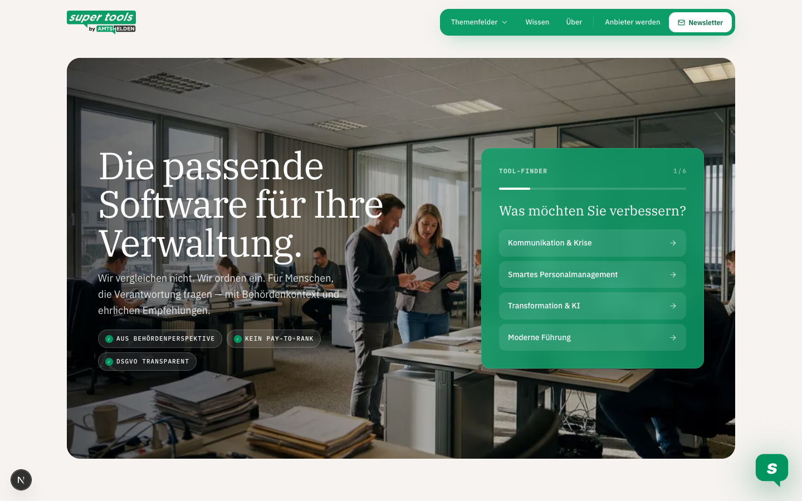
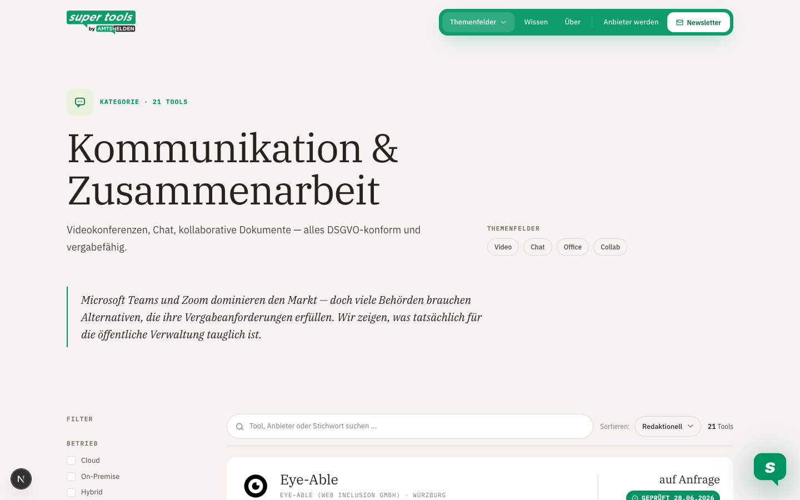
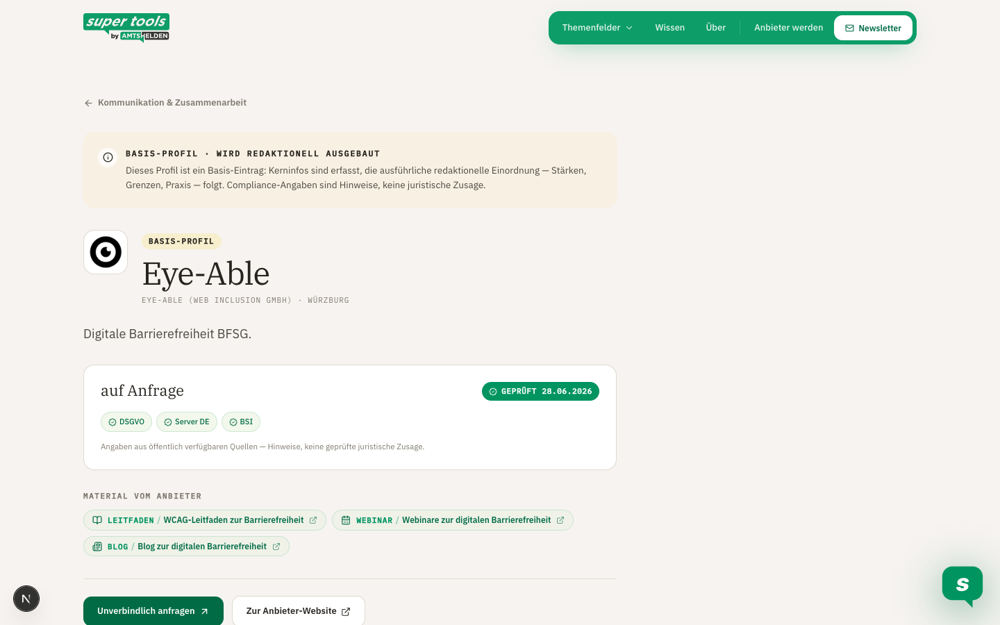
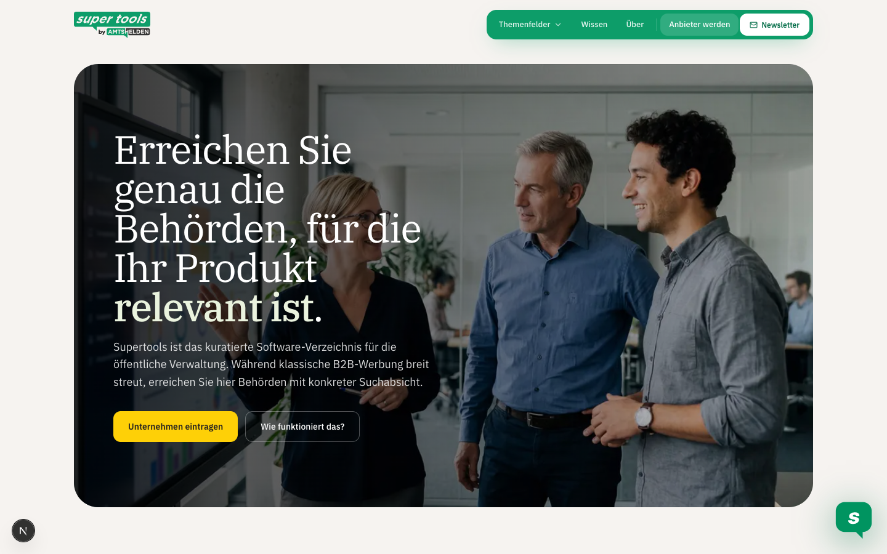

Was steht
Website
- Interne Vorschau mit Startseite, Themenfeldern, Kategorien, Tool-Listen und Profilen.
- 59 echte Anbieter als breite Arbeitsbasis, aber noch keine finale Empfehlungsliste.
- Öffentliche Sprache: kuratiertes Verzeichnis, Basis-Profile, keine Crawler-Erzählung.
- Formulare, Newsletter, CMS, Rechtstexte und finale Toolprofile noch offen.
Was wir suchen
Discovery
- Neue Software-Kandidaten über Suchräume, Events, Messen, Public-Sector-Begriffe und Beschaffungsdaten.
- Kernbegriff: Public Sector plus Kategorie, Kommune, Verwaltung, Behörde, GovTech.
- Ziel: Kandidaten finden, nicht sofort bewerten.
- Output: Kandidatenliste mit Quelle, Kontext, Kategorie-Hypothese und Priorität.
Was er macht
Gezielter Crawler
- Grast bekannte Kandidaten systematisch ab: Anbieterwebsite, Trust, Security, Datenschutz, Docs, Cases, Webinar.
- Sammelt Belege statt Marketingtext.
- Trennt Produktdaten, Anbieterclaims, Website-Hosting und redaktionelle Notizen.
- Output: Evidence Store und Review-Report.
Wie wir messen
Qualität
- Quelle stark, mittel oder schwach.
- Signal belegt, unsicher, widersprüchlich oder fehlt.
- Produktbezug vor Website-Bezug.
- Menschliche Freigabe vor Website-Export.
Wie es wachsen soll
Marketing
- Amtshelden-Reichweite als Startkanal.
- Supertools-Newsletter und wiederkehrende Formate: Tool des Monats, Messe-Radar, GovTech-Fundstücke.
- Anbieterpakete später: Basis, Verified, Sponsored Content, Leads.
- Tracking-Funnel: Liste → Profil → CTA → Anfrage.
Mission zuerst Datenqualität vor Automatisierung Redaktion bleibt Gatekeeper



SuchräumeThemen, Kategorien, Public-Sector-Keywords, 20 relevante Messen.
DiscoverySearch APIs, Messeprogramme, Vergaben, News, YouTube, Anbieterlandschaft.
Entity MatchProdukt, Anbieter, Domain, Kategorie und Dubletten zusammenführen.
QualifizierungSoftwareprodukt? Behördenfit? Ausschlussgrund? Priorität?
Targeted CrawlTrust, Security, Datenschutz, Docs, Cases, Webinare, Downloads.
Evidence StoreAussage + Quelle + Fundstelle + Qualität + Zeitstempel.
Human ReviewFreigabe, Nachrecherche oder Ausschluss.
Anbieterquellenmittel/stark
- Security, Trust, Datenschutz, Subprozessoren
- Docs, Changelog, Case Studies, Public Sector
- Gut für Produktdetails, aber Anbieterclaim bleibt Anbieterclaim
Externe Belegestark
- TED/Vergabe, BSI, öffentliche Register
- Behördenreferenzen, Zertifikate, Rahmenverträge
- Gut für belastbare Signale
Search APIsdiscovery
- Brave, Google Programmable Search, Bing
- Queries wie Public Sector, Kommune, Verwaltung, GovTech
- Gut zum Finden, nicht zum Publizieren
Content-Kanälekuratiert
- YouTube, Webinare, Whitepaper, Presse, Events
- Nur mit Thema und Relevanz ausspielen
- Maximal wenige hochwertige Stücke je Tool
Datenfeld
Gute Qualität
Achtung
Website-Wert
Produktidentität
Produktname, Anbieter, Domain, Rechtsform, Kategorie klar getrennt.
Firma ≠ Produkt; Agentur/Integrator ≠ Software.
Schneller Überblick, saubere Profile.
Behördenfit
Öffentliche Kunden, kommunale Cases, Verwaltungssprache, GovTech-Use-Cases.
Generisches “Public Sector” ohne Beleg.
Warum relevant für Behörden?
Datenschutz & Betrieb
AVV, Subprozessoren, Datenregion, Betriebsmodell, Produktbezug.
Datenschutzerklärung der Website als falscher Produktbeleg.
Risiken schnell erkennen.
Sicherheit
ISO, BSI/C5, SSO, Rollen, Audit, Doku mit Fundstelle.
“Sicher” als Marketingfloskel.
Beschaffungs- und IT-Prüfung vorbereiten.
Aktualität
Changelog, neue Zertifikate, Events, Statuspage, Monitoring-Zeitstempel.
Einmalige Momentaufnahme ohne Wiedervorlage.
Vertrauen durch Stand der Prüfung.
Content
Case, Webinar, Video oder Whitepaper mit erkennbarem Thema.
Generische Blogs, leere Webinarseiten, Download-Friedhof.
Vertiefung ohne Recherchefrust.
Marketing-Mechanik
Vom Amtshelden-Publikum zur Supertools-Nutzung
- Amtshelden Newsletter und Social als Startmotor.
- Messe-Radar: 20 relevante Events als Discovery- und Content-Taktgeber.
- Redaktionelle Formate: Tool des Monats, Public-Sector-Shortlist, Kategorie-Guides.
- Conversion messen: Kategorie → Toolprofil → CTA → Anfrage.
Nächste Entscheidung
Mission klarziehen, dann bauen
- Finale Taxonomie und Ausschlusskriterien definieren.
- Quellengewichtung und Qualitätsmatrix verbindlich machen.
- 20 Messen + API-Suchräume als Discovery-Backlog sammeln.
- Goldstandard-Testset mit 15 Tools manuell bewerten.

Messbare Conversion
Liste → Profil → CTA → Anfrage
- Tool-Karten-Klicks nach Kategorie und Position messen.
- Profil-CTAs trennen: Anfrage, Anbieterwebsite, Video, Webinar, Whitepaper.
- Qualifizierte Anfrage als Kern-Conversion definieren.
- UTM-Logik für Amtshelden, Newsletter, Messen und Social sauber nutzen.